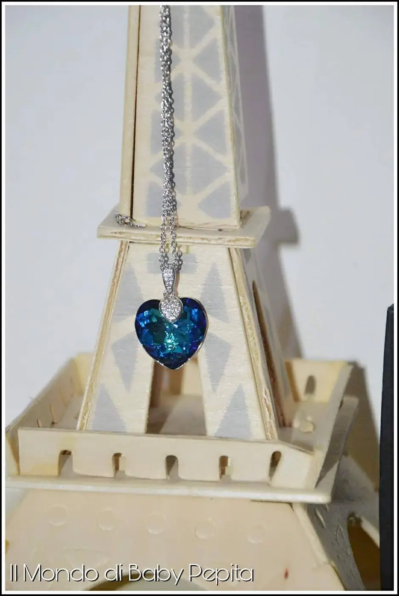
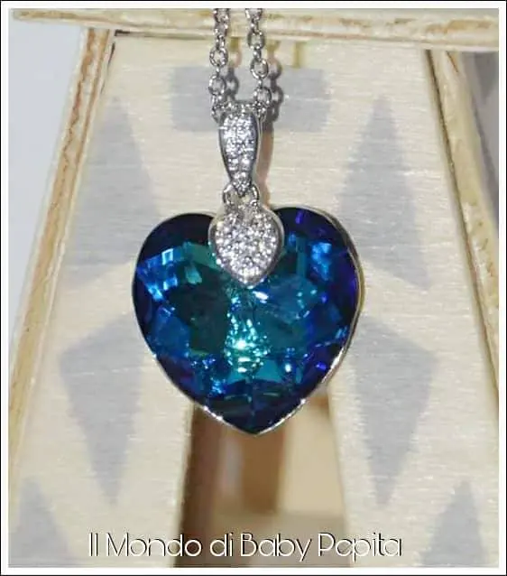
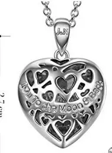
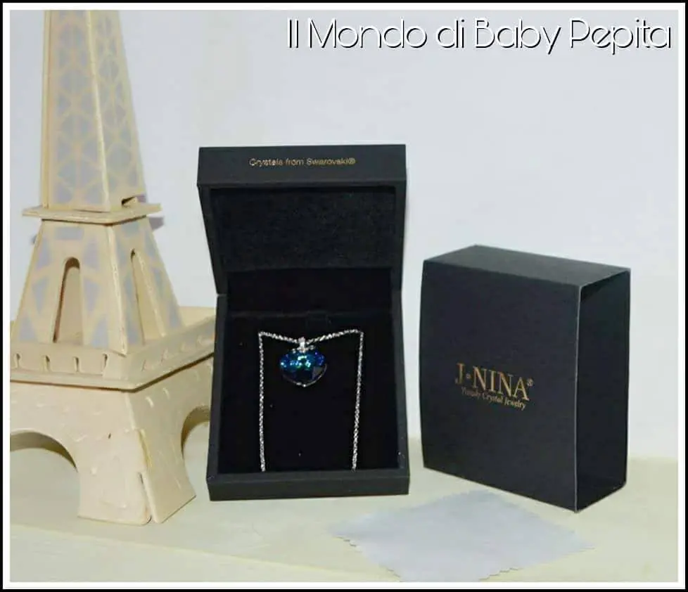
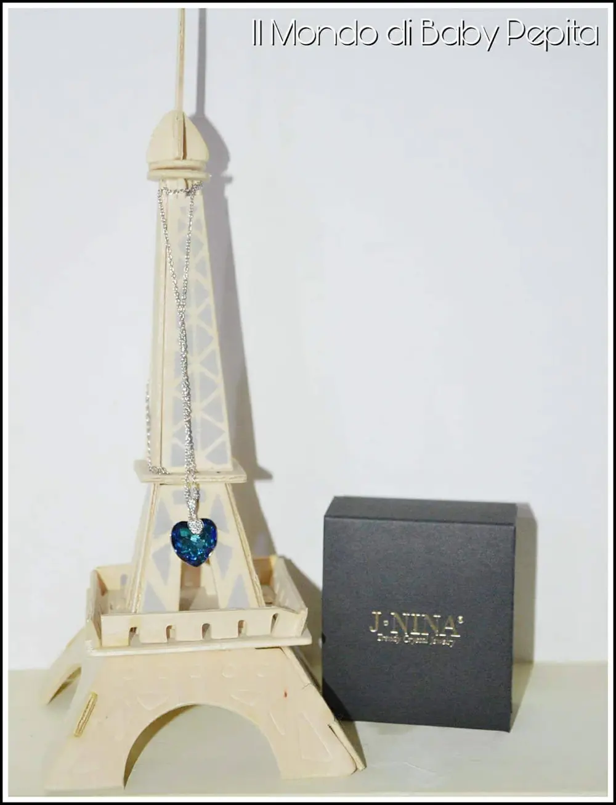

Cuore blu come l'oceano - collana
"Il cuore di una donna è un profondo oceano di segreti".
- Titanic
Il cuore dell'oceano: Ricordate il film Titanic? Ricordate che nel film c'è un gioiello simbolo? Il cuore dell'oceano. Perché oggi vi sto vi sto riportando nel fantastico mondo cinematografico e nel celebre film che ha fatto sognare?
Perché c'è un gioiello che mi ricorda davvero molto il famoso 'cuore dell'oceano'.
Oggi infatti, voglio mostrarvi un gioiello blu. Di un blu intenso ed ipnotico. È appunto un cuore blu di 3 cm, tagliato in modo particolare a stella in modo che riflettono i bagliori su ogni angolazione così da farlo brillare sempre.

Il bellissimo ciondolo blu è agganciato ad una catenina da un gancetto sempre a forma di cuore che anche questo piccolo gancetto a forma di cuore, è ricoperto di tanti piccoli zirconi bianchi.

La collana è in argento non sottile ma nemmeno spessa, adatta ad un abbigliamento ovviamente elegante.
Non ha nessuna particolarità la catenina perchè tutta l'attenzione viene data al ciondolo finale.
Il retro del gioiello è bellissimo. Infatti, il cuore blu è ricoperto da una placca in argento tutta rintagliata con rilevi e con la scritta 'i♡u to the Moon & Back' tradotto vuol dire 'ti voglio bene fino alla luna e ritorno'.
Davvero una dichiarazione d'affetto particolare e non banale.

Io trovo che quest'articolo è davvero unico nel suo genere, da regalare a donne che amano indossare gioielli da mettere in mostra.

Il tutto arriva in una elegante scatola nera effetto pelle, con l'incisione delle iniziali dell'azienda. All'interno invece, è effetto in velluto e la collana è adagiata su un cuscinetto cartonato nero.

Contiene in più, anche un panno come quello per gli occhiali per lucidare il gioiello prima e dopo l'uso.
Secondo me è una bellissima idea regalo in vista del natale, da regalare ad un'amica, o una mamma o anche una suocera o perché no, ad una sorella.
Prezzo: 28,99€
Se volete acquistarlo CLICCATE QUI.